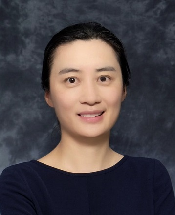

|
Xiao Wang (王晓)
|
 |
I am currently a Professor of Mathematics at Sun Yat-sen University. I obtained my Ph.D. degree from the Academy of Mathematics and Systems Science of the Chinese Academy of Sciences and B.S. degree from the School of Mathematics at Shandong University. Prior to joining SYSU in March 2025, I had the privilege of working in the University of Chinese Academy of Sciences and Pengcheng National Laboratory.
Email: wangx936@mail.sysu.edu.cn
|
Research Interests
Theories, algorithms and applications relavent to mathematical optimization, in particular stochastic optimization, large scale nonconvex optimization and nonlinear constrained optimization
Recruitment
I am currently looking for highly self-motivated Master's and PhD students as well as visiting students with a solid background in mathematics. If you are interested, please feel fere to reach out by email.
I am also seeking applications for a postdoctoral position in my group. Candidates should have a PhD in mathematics, computer science, or a closely related field, with strong analytical and computational skills. Experience in areas such as machine learning, optimizaiton, numerical methods or data-driven modeling is particularly valued. Interested applicants are welcome to drop me an email.
|